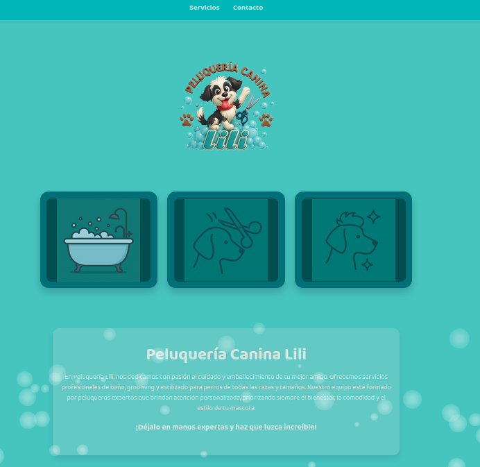
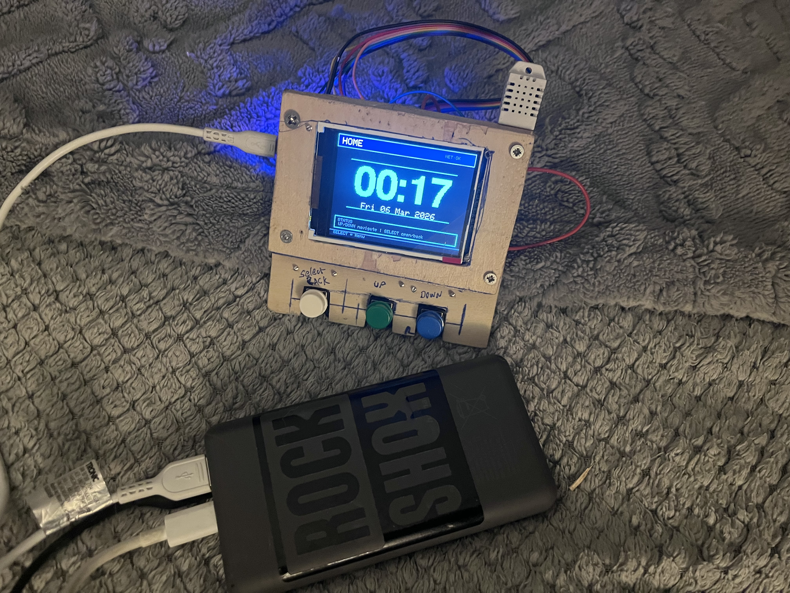
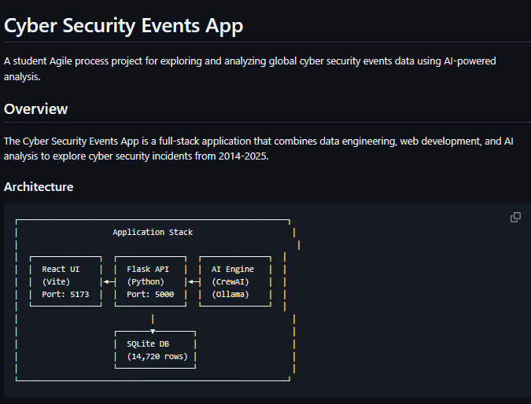

<section id="projects" class="projects sec-pad">
  <div class="main-container">
    <h2 class="heading heading-sec heading-sec__mb-bg">
      <span class="heading-sec__main">Projects</span>
      <span class="heading-sec__sub">
        Here are some of the projects I’ve built recently — from practical web applications
        to full-stack experiments. Each one reflects my growth as a developer and my interest
        in clean, efficient design and real-world problem solving.
      </span>
    </h2>

    <div class="projects__content">

      <!-- Peluqueria Lili -->
      <div class="projects__row">
        <div class="projects__row-img-cont">
          
        </div>

        <div class="projects__row-content">
          <h3 class="projects__row-content-title">Peluqueria Lili Website</h3>

          <p class="projects__row-content-desc">
            A responsive website developed for a local hair salon to present services,
            contact information, and client details. Built using semantic HTML, CSS,
            and JavaScript. This project strengthened my understanding of web structure,
            layout design, and accessibility best practices.
          </p>

          <a href="https://github.com/Killo0077/peluqueria-lili" class="btn btn--med btn--theme dynamicBgClr"
            target="_blank">
            View Project
          </a>
        </div>
      </div>


      <!-- ESP32 Weather Station -->
      <div class="projects__row">
        <div class="projects__row-img-cont">
          
        </div>

        <div class="projects__row-content">
          <h3 class="projects__row-content-title">ESP32 Weather Station</h3>

          <p class="projects__row-content-desc">
            DIY IoT weather station built with an ESP32 microcontroller, a DHT22
            temperature and humidity sensor, and a 2.8" TFT display. The system
            shows environmental data, real-time clock synchronization over WiFi,
            and live RSS news feeds. Navigation is handled through hardware
            buttons and a custom menu interface.
          </p>

          <a href="https://github.com/Killo0077/esp32-weather-station" class="btn btn--med btn--theme dynamicBgClr"
            target="_blank">
            View Project
          </a>
        </div>
      </div>


      <!-- Cyber Incident Explorer -->
      <div class="projects__row">
        <div class="projects__row-img-cont">
          
        </div>

        <div class="projects__row-content">
          <h3 class="projects__row-content-title">Cyber Incident Explorer</h3>

          <p class="projects__row-content-desc">
            Full-stack collaborative project developed using Agile practices to
            analyze global cyber security incidents. Built with React (Vite),
            a Flask API, SQL databases, and an AI analysis engine. The platform
            integrates APIs, data pipelines, and an interactive interface to
            explore cyber incident data and generate AI-assisted insights.
          </p>

          <a href="https://github.com/gabriel-zomignani/cyber-incidents-explorer"
            class="btn btn--med btn--theme dynamicBgClr" target="_blank">
            View Project
          </a>
        </div>
      </div>

    </div>
  </div>
</section>